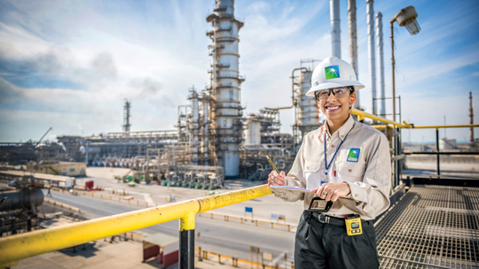

História da Saudi Aramco
A gigante petroleira estatal Aramco produziu uma riqueza colossal para a Arábia Saudita desde a descoberta da primeira jazida no país em 1938, denominada "poço da prosperidade". A Aramco nasce de um acordo de concessão assinado em 1933 pelo governo saudita com a companhia americana Standard Oil Company of California. A prospecção começa em 1935 e três anos depois, o petróleo começa a jorrar. Em 1949, a produção de petróleo atinge o nível recorde de 500.000 barris por dia (mbd) e segue aumentando após a descoberta de outros grandes campos petrolíferos, como Ghawar, o maior do mundo, com reservas comprovadas de 60 bilhões de barris.
Em 1973, em pleno 'boom' dos preços do petróleo, vinculado ao embargo árabe do ouro negro contra os Estados Unidos por seu apoio a Israel, o governo saudita adquire 25% da Aramco, com os quais o percentual do Estado chega a 60%, tornando-o acionista majoritário. Em 1980, a empresa é nacionalizada e oito anos depois, rebatizada de Saudi Arabian Oil Company ou Saudi Aramco.
Desde os anos 1990, a Aramco investiu centenas de bilhões de dólares em projetos de expansão e sua capacidade de produção atual é de 12 milhões de barris diários.
Hoje, a Aramco possui 260 bilhões de barris de reservas comprovadas de petróleo, tornando a Arábia Saudita o segundo país com as maiores reservas do mundo, atrás da Venezuela.A empresa também tem filiais e refinarias em outros países e redes de oleodutos nacionais e internacionais.
Evolução Visual
A identidade visual da marca passou por algumas alterações ao longo dos anos. No dia 31 de janeiro de 1944, quando o nome da empresa foi alterado para Arabian American Oil Co. (conhecido pela abreviatura de ARAMCO), foi adotado um novo logotipo. Em 1988 com a mudança para Saudi Arabian Oil Company, pela primeira vez o nome SAUDI ARAMCO apareceu no logotipo. Posteriormente a marca apresentou um logotipo mais moderno e colorido. Este logotipo passou por uma modernização há alguns anos atrás.